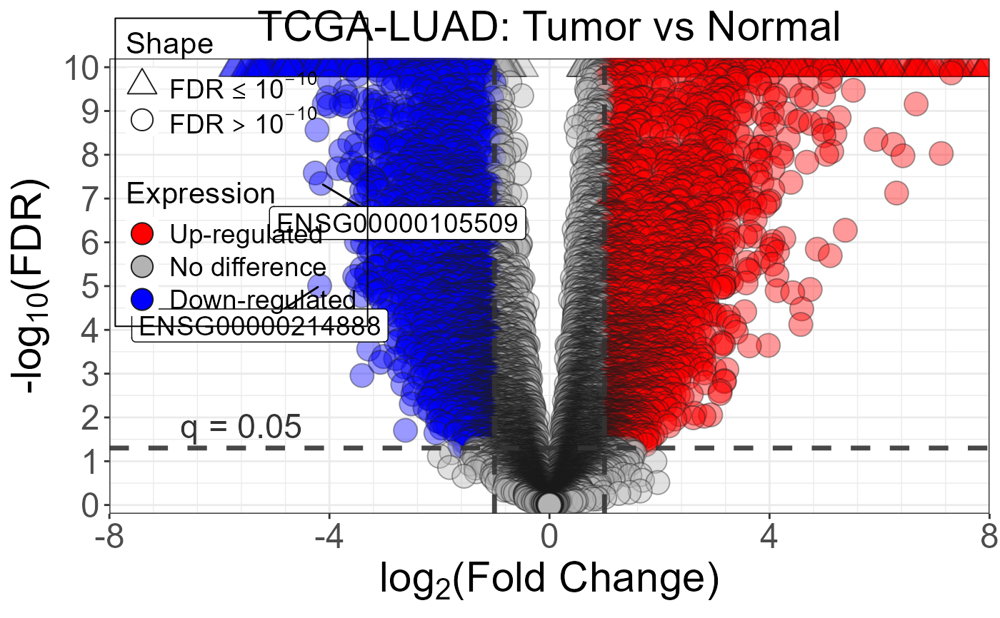
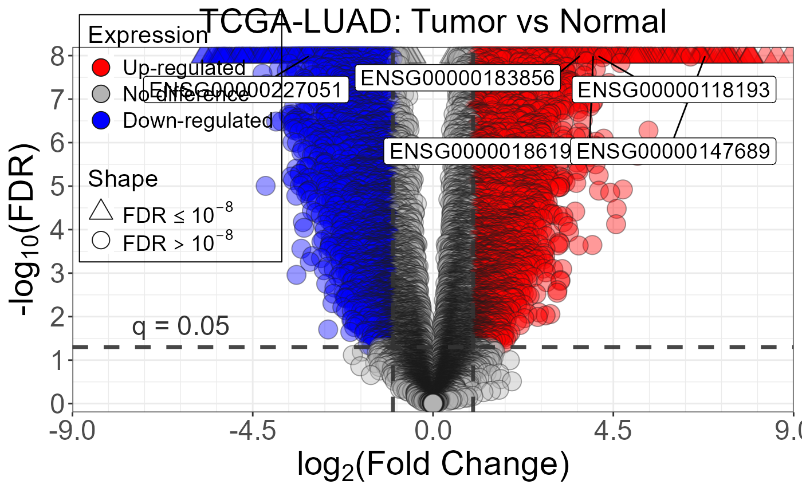

Function to draw Volcano plots.
nice_Volcano.RdVolcano plot with configurable point shapes and threshold annotations:
Automatic triangle shapes for points above a user-defined y-axis limit (and a matching legend entry).
Horizontal dashed line at one or more significance thresholds, annotated with its value.
Vertical dashed lines at log-fold-change cutoffs, shown as custom x-axis ticks.
Usage
nice_Volcano(
results,
x_range = 9,
y_max = 8,
cutoff_y = 0.05,
cutoff_x = 1,
nice_y = NULL,
nice_x = NULL,
y_var,
x_var,
label_var,
legend = TRUE,
title,
colors = c("red", "grey70", "blue"),
genes = NULL
)Arguments
- results
A data frame containing at least one column of effect sizes (e.g. log₂FC) and one column of significance (e.g. FDR).
- x_range
X-axis range of values.
- y_max
Maximum values of y-axis.
- cutoff_y
to be defined.
- cutoff_x
to be defined.
- nice_y
to be defined.
- nice_x
to be defined.
- y_var
Name of the column in
resultsto plot on the y-axis (e.g. FDR).- x_var
Name of the column in
resultsto plot on the x-axis (e.g. log₂FC).- label_var
Name of the column in
resultsto use as point labels (e.g. gene IDs or HGNC symbols). To use gene symbols, first runget_annotations()and join thesymbolcolumn to your results table.- legend
Logical. Control legend display. Default: TRUE.
- title
title.
- colors
colors.
- genes
Vector of genes to label in the plot. Default: NULL.
See also
nice_VSB() for gene-level expression visualization;
detect_filter() to filter detectable genes before plotting;
deseq2_results for an example input dataset.
Examples
data(deseq2_results)
nice_Volcano(
results = deseq2_results,
x_var = "log2FoldChange",
y_var = "padj",
label_var = "gene_id",
title = "TCGA-LUAD: Tumor vs Normal",
cutoff_y = 0.05,
cutoff_x = 1,
x_range = 8,
y_max = 10
)
#> Warning: Removed 4 rows containing missing values or values outside the scale range
#> (`geom_point()`).
#> Warning: Removed 4 rows containing missing values or values outside the scale range
#> (`geom_label_repel()`).
#> Warning: ggrepel: 268 unlabeled data points (too many overlaps). Consider increasing max.overlaps

# Highlight specific genes
nice_Volcano(
results = deseq2_results,
x_var = "log2FoldChange",
y_var = "padj",
label_var = "gene_id",
title = "TCGA-LUAD: Tumor vs Normal",
genes = deseq2_results$gene_id[1:5]
)
#> Warning: Removed 1 row containing missing values or values outside the scale range
#> (`geom_point()`).
